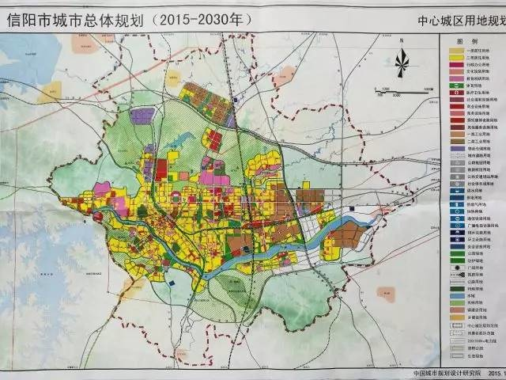
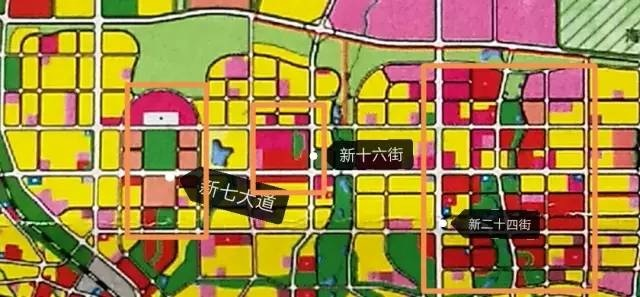
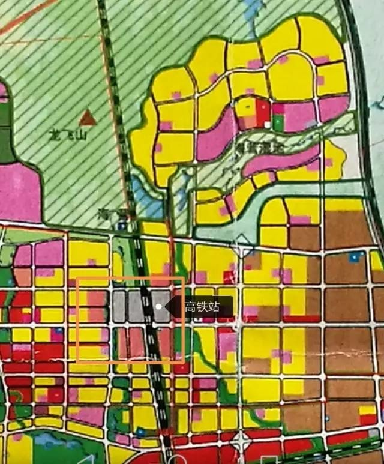
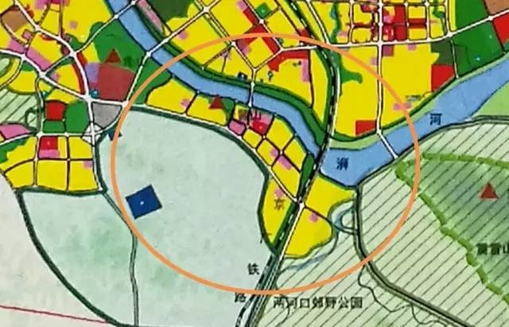
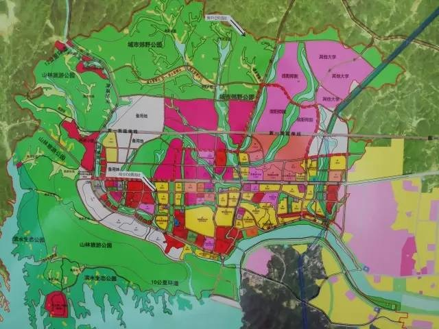

 1.羊山商业  参照规划图，结合实际，由西向东，可以了解到。百花园东、西、北、行政公共办公机构，南为百花会展中心。  从图中看，环绕高铁站周边为信阳主要商务区，高铁站西广场南北是信运、鸿运汽车站与公交车站。东面已知恒大翡翠龙庭规划有三栋写字楼。
 浉河区西段、中段基本已开发完成。浉河中东段、东段以龟山、琵琶山、震雷山风景区为“背景”，开发以洋房、别墅为主的住宅小区。风景秀丽、市政休闲配套齐全，北临老城生活商业区，且规划有配套学校。比较适宜对生活环境要求比较高养老改善型、在外地工作刚需型人群。 4.信阳市“龙头”——南湾  南湾湖风景区，国家AAAA级风景区。通过规划图推断，信阳市政府打算把南湾打造成以南湾湖风景区为核心的旅游风景区。南湾规划的住宅用地稀少，且多为以洋房、别墅为主的住宅小区，人群密度较小，比较符合风景旅游商业发展。该区域难以发展大型生活商业，比较适合养老改善型需求。住宅用地稀少，周边环境优美，未来住宅价格涨幅可能比较大。 5.2015年信阳市浉河区东段住宅开发重心之一—震雷山风景区
在信阳市，风景比较美的为两块区域，一块是浉河西端南湾湖，另一块是浉河东端震雷山。从规划图中对比可知，这块区域所占据面积也不小，但这片区域在信阳东南角，远离主要生活商业区，周边环境远比不上琵琶山区域。既难以满足养老改善型需求人群，也难以满足刚需型人群。发展可能比较乏力。市浉河区东段住宅开发重心之一—震雷山风景区
|